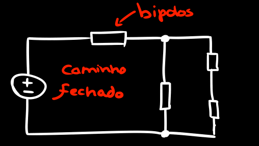
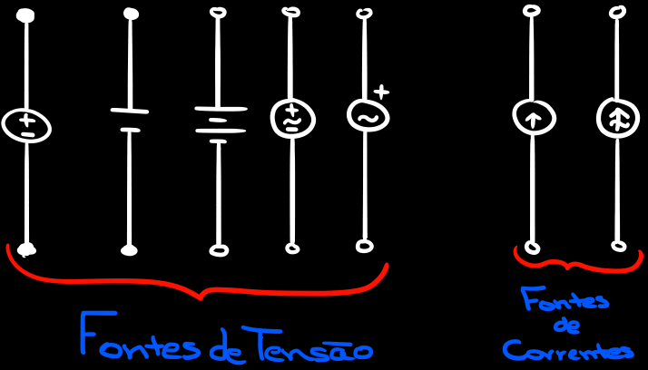
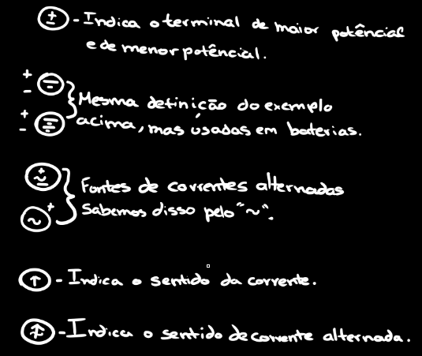
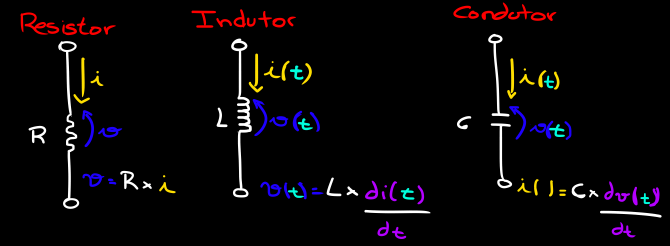

Circuitos Elétricos I - Bipolos
O que é circuito elétrico?
É uma interconexão entre componentes elétricos de maneira a formar caminhos fechados
por onde circulam correntes.

Bipolos é um elemento de dois terminais.
Bipolos Ativos - Fornece energia para o circuito

Alguns significados dos Bipolos Ativos:

Bipolos Passivos - Não fornece energia para o circuito (recebem dos ativos).

OBS: O indutor e o Capacitor são elementos que acumulam energia.
--------------------------------------------------------------
i(t) - São as correntes de tensões em um Bipolo que acumula energia, assim elas vão passar a tempender do tempo (t)
di(t) - É derivada da corrente i(t) em relação ao tempo.
Por ainda ser a primeira página de estudos, poderá haver erros.
Qualquer coisa consulte aqui